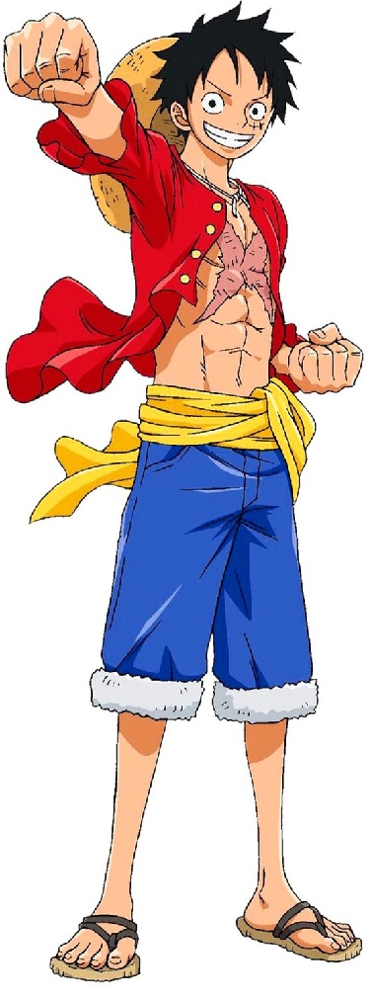
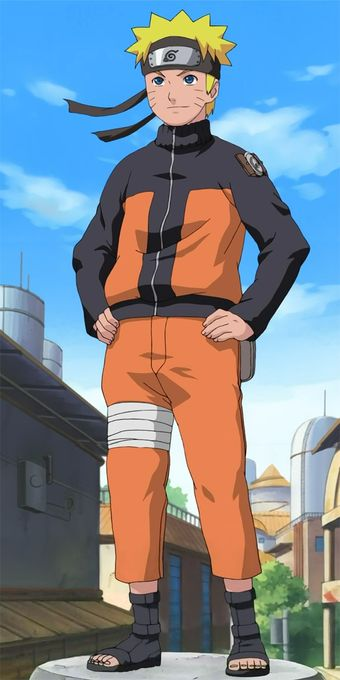
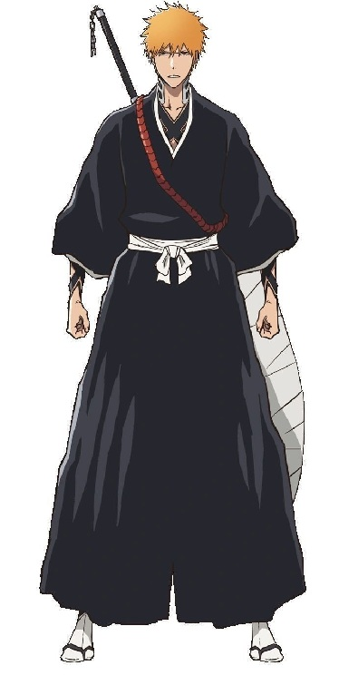

O “Big Three” da Shonen Jump é o nome pelo qual ficaram conhecidos One Piece, Naruto e Bleach, três mangás que tiveram publicação simultânea na Weekly Shōnen Jump e se tornaram particularmente dominantes em popularidade durante os anos 2000 e início dos anos 2010. O termo é uma designação criada e popularizada pelos fãs e pela mídia, e não um prêmio ou classificação oficial da revista.
Data da prova: 2026-09-29 10:00
"O que é o Big 3?"
| Série | protagonista | Autor |
|---|---|---|
| One Piece | Monkey D. Luffy | Eiichiro Oda |
| Naruto | Naruto Uzumaki | Masashi Kishimoto |
| Bleach | Ichigo Kurosaki | Tite Kubo |
One Piece
One Piece, criado por Eiichiro Oda, começou sua publicação em 1997 e acompanha uma gigantesca
aventura marítima protagonizada por Monkey D. Luffy. A história se passa em um mundo formado por
inúmeras ilhas, mares e nações, onde piratas, marinheiros e diferentes povos disputam poder,
liberdade e riquezas. A obra combina aventura, comédia, batalhas, mistério e uma enorme
quantidade
de personagens e histórias interligadas.
Luffy é um jovem pirata que possui o sonho de encontrar o lendário One Piece e se tornar o Rei
dos
Piratas. Para isso, ele parte para o mar e começa a reunir sua própria tripulação, os Piratas do
Chapéu de Palha. Ao longo da jornada, a aventura deixa de ser apenas uma busca por um tesouro:
Luffy
e seus companheiros acabam envolvidos em conflitos políticos, guerras, sistemas de opressão e
mistérios relacionados à própria história do mundo.
Um dos elementos centrais da narrativa é a ideia de liberdade. Luffy é extremamente determinado
e
costuma agir de acordo com aquilo que considera certo, mesmo quando isso significa enfrentar
organizações muito mais poderosas. Ele também possui uma forte lealdade aos seus amigos e
frequentemente coloca a liberdade e o bem-estar deles acima de sua própria segurança.
“Eu só tenho o final de One Piece em mente, e nada mais. Mas, sabendo o ponto de chegada, vou construindo a história e criando arcos que levam até ele.” - Eiichiro Oda

Monkey D. Luffy
Naruto
Naruto, criado por Masashi Kishimoto, conta a história de Naruto Uzumaki, um jovem ninja da Vila
Oculta da Folha que deseja se tornar Hokage, o líder de sua vila. A narrativa começa
acompanhando
sua formação como ninja e gradualmente amplia sua escala até envolver conflitos entre grandes
nações, organizações criminosas, guerras e questões relacionadas ao passado do mundo
ninja.
Naruto cresce sendo rejeitado por muitos habitantes da vila. Isso ocorre porque ele carrega
dentro
de si a Raposa de Nove Caudas, uma criatura que atacou a Vila da Folha no passado. Como
consequência, Naruto cresce praticamente sozinho e desenvolve uma enorme necessidade de ser
reconhecido pelas pessoas ao seu redor.
Sua trajetória começa como a de um estudante aparentemente problemático e pouco talentoso, mas
ele
demonstra uma característica fundamental: recusa-se a desistir. Conforme progride, Naruto
desenvolve
suas habilidades, cria amizades e passa a compreender melhor as dificuldades enfrentadas por
outras
pessoas.
A história também explora temas como solidão, amizade, reconhecimento, guerra, vingança e o
ciclo de
ódio existente entre diferentes grupos do mundo ninja.
“Peguei esses sentimentos que definiram minha infância e os confiei ao Naruto.” - Masashi Kishimoto

Naruto Uzumaki
Bleach
Bleach, criado por Tite Kubo, apresenta Ichigo Kurosaki, um adolescente que possui a capacidade
de
enxergar espíritos. Sua vida muda completamente quando ele conhece Rukia Kuchiki, uma Shinigami
—
uma espécie de ceifadora de almas responsável por combater espíritos malignos e conduzir almas
para
a Soul Society.
Depois de um acontecimento que altera sua vida, Ichigo passa a assumir responsabilidades de
Shinigami e começa a enfrentar criaturas chamadas Hollows. O que inicialmente parece ser apenas
uma
atividade sobrenatural relativamente simples gradualmente se transforma em uma história muito
maior,
envolvendo a Soul Society, diferentes grupos de seres espirituais e conflitos relacionados à
própria
identidade de Ichigo.
Uma característica particular de Bleach é que sua narrativa constantemente expande a compreensão
que
o protagonista possui sobre si mesmo. Conforme a história avança, Ichigo descobre que suas
habilidades e sua origem são muito mais complexas do que imaginava.
A obra combina ação, sobrenatural, drama, identidade e conflitos entre diferentes sociedades
espirituais.
“Nunca foi minha intenção criar um mangá que se tornasse popular. Eu simplesmente comecei a desenhar uma história que queria desenhar.” - Tite Kubo
